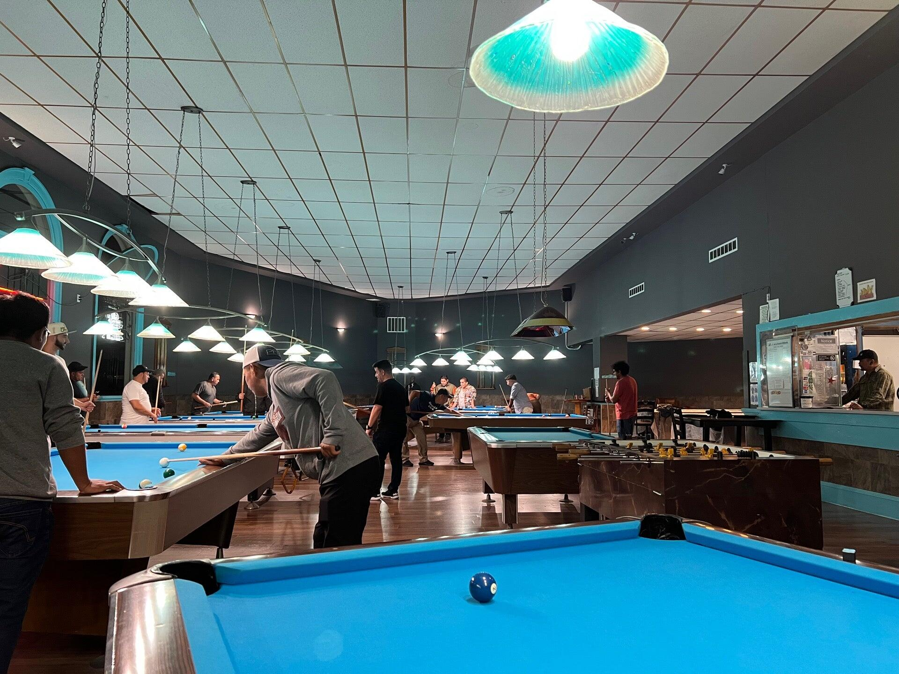

Table time
Tables are available by the hour. Call the hall for current rates and availability before bringing a group.
Call (650) 992-79001 SAN PEDRO ROAD, DALY CITY
A neighborhood pool hall at the corner of Mission Street and San Pedro Road.
Ask about a table
AT THE TABLE
Come in for table time, meet up for a few games, or ask about joining the local league.
Tables are available by the hour. Call the hall for current rates and availability before bringing a group.
Call (650) 992-7900Town & Country is listed as a Tuesday in-house league location by the BCA Pool League. Contact the hall for the current schedule and how to join.
View the league directoryFind the entrance at 1 San Pedro Road, just off Mission Street. Save the address before you head over.
Plan your visitListed hours. Call to confirm before a late visit.
Town & Country on Facebook